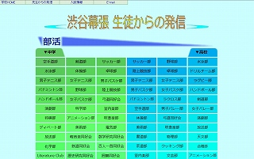

コンピュータ同好会(―どうこうかい)[固有名詞]
高校棟スミのコンピュータ室で細々と活動している渋谷教育学園幕張高等学校の同好会の一つ。
この学校には多々部活が存在しているが、部活動とはそもそも、「学習の延長上」という理念の許に存在している(らしい)。[注2]
すなわち、どの部活動にもそれぞれ何の科目系の部活である、といった理念が存在する。それは往々にして顧問の教科であったり、活動している場所であったり。十部活十色。人それぞれ。みんなちがってみんないい。みすゞ。
この同好会の顧問は情報科(であり、数学科)の先生[注3]。すなわち、この部活動は情報科系の同好会といふことにぞなりける[注4]。
つまり何が言いたいかというと、この同好会では情報科学の視点からコンピュータを扱っているというなんとも微妙な立場の団体なのである。
基本的にやっていることは自由である。プログラミングをしている人もあれば、ホームページを作っている人もいるし、部屋に来たのに何故か自習している人もいる。まあそれほど心地よい環境で活動できているということなのだ。

しかしながら、この同好会には他の部活動と比べて異端とも言える点が存在する。それは、学校のお手伝いをしているということである。
そう、この同好会は、学校ホームページ内の「生徒からの発信」のページを管理し、随時更新しているのだッ！[注5]
そのために、時には各部活動にホームページ更新のお願いを配ったり、受け取ったファイルを整理したりしている。結構学校内での認知度は高いはずだ。[注6]
その他、一般生徒がコンピュータ室を使用している時に使い方の案内をしている(ときたま)。
時々部活全体で大きな活動を行うことがある。2010年度文化祭の時には、準備日や、文化祭当日の各団体の様子を写真に収め、ホームページ用に編集してから随時更新していった。(炎天下の校内を4階から1階まで何往復もしたさ)
そうして作られたページが、これである。
同じ年、われわれは「第13回全日本中学高校WebコンテストThinkQuest JAPAN」"規定部門"にエントリーし、「情報化社会の光と闇」というテーマを設定してホームページを制作・提出した。
その際に制作されたページが、これである。
結果はまさかのセミファイナリスト進出。賞状を頂いたよ！